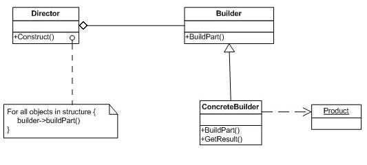

Builder Pattern
복잡한 객체의 생성과 표현을 분리하여 객체의 생성을 담당하는 객체의 생성 프로세스를 수정하지 않으면서도 다양한 표현을 생성할 수 있도록 한다.
구성
- Builder
- Director가 생성을 수행하기 위해 사용하는 인터페이스
- Concrete Builder
- Director의 지시를 따라 Product를 실제로 빌딩한다. 보통 외부에서(Client에 의해) 혹은 Abstract Factory에 의해 생성된다.
- Director
- 무엇을 빌딩하는지 정확히 알지 못한 채로 객체를 빌드한다.
- Product
- Director의 지시하에 Builder가 빌딩한 객체
구조

장단점
- Builder는 객체의 표현을 '비즈니스'로직과 멋지게 분리해 주어 비즈니스 로직을 수정하지 안흐면서도 새로운(혹은 변환된) 표현을 쉽게 추가할 수 있도록 해준다.
- Builder 인터페이스의 변화는 이를 구현한 모든 클래스에 영향을 미친다.
- 어떤 UI요소는 같은 인터페이스로 처리하기 어려울 수도 있다(예를 들어 HTML vs Swing).
예제
예제 코드 보기